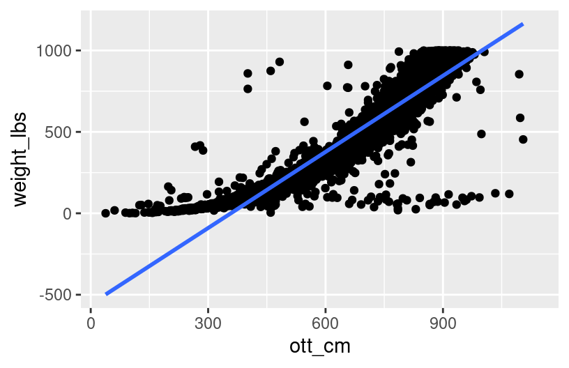
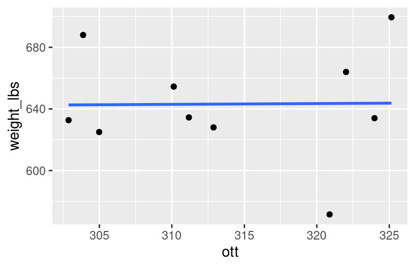
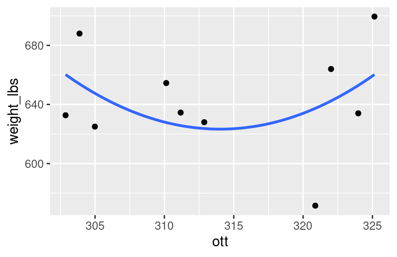
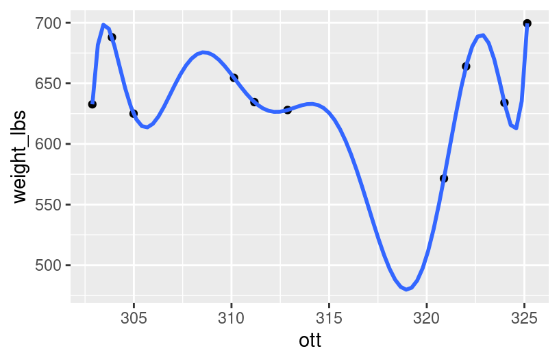

library(tidyverse)
pumpkins <- readr::read_csv('https://raw.githubusercontent.com/rfordatascience/tidytuesday/main/data/2021/2021-10-19/pumpkins.csv')Notes
Learning goals
By the end of this lesson, you should be able to:
Distinguish between descriptive, predictive, and causal research questions
Identify confounders, colliders, precision variables, mediators, and effect modifiers in a causal diagram
Explain when variables are redundant or multicollinear
Relate redundancy and multicollinearity to coefficient estimates and \(R^2\)
Explain why adjusted \(R^2\) is preferable to multiple \(R^2\) when comparing models with different numbers of predictors
Readings and videos
Please watch the following video before class.
Optional:
- Reading: Section 3.9.5 in the STAT 155 Notes
- Video: Redundancy and Multicollinearity
Part 1: The 3 types of research questions we can investigate using statistical models
1: Descriptive Research Questions
Descriptive research questions are questions that seek to better understand the characteristics of individual variables and/or relationships between them.
univariate numerical summaries
univariate/bivariate visualizations
(simple, i.e., single-predictor) models to:
formalize how we conceptualize/estimate the relationship between \(X\) and \(Y\) (e.g., write a model statement)
more precisely quantify the estimated effect of \(X\) on \(Y\) (e.g., what does \(\hat\beta_{1}\) tell us?)
- also assess our uncertainty in that estimate (more on this later in the semester!)
measure the strength of the estimated relationship between \(X\) and \(Y\) (e.g., \(R^2\))
If we’re only interested in associations (not causal relationships), we don’t need to adjust for potential confounding variables–usually descriptive questions are dealing with simple/bivariate analyses.
Statistical analyses almost always start with descriptive research questions, and we iterate on these descriptive questions throughout the process!
Let’s brainstorm some descriptive research questions!
Check out the codebook for a dataset of giant pumpkins:
Run the following code to load the data:
With your groups: brainstorm 4-5 descriptive research questions you could ask about this dataset. Think about the following:
what relationships between variables might be interesting to look at
what univariate numerical summaries you would calculate
what univariate/bivariate visualizations you would use to explore these relationships
(…and if you’re feeling ambitious, try to code up answers to these as a group!)
2: Predictive Research Questions
Predictive research questions seek to determine if (and how well) we can predict outcomes for new / future events, using the information we already have. We’ve seen a bit of prediction in this course when we talked about fitted values!
Suppose we are a tech startup looking to financially exploit revolutionize the pumpkin-growing community by selling a model that can accurately predict a pumpkin’s eventual weight (weight_lbs) based on a constellation of other variables (location, genetics, variety, etc.). We have a meeting with potential investors in two weeks and want to prove to them that our linear regression “artificial intelligence” model, which we trained on the pumpkins dataset.
With your groups, discuss the following questions:
- First, discuss which of the available predictor(s) you would you include in the model. Why these variables? If you excluded any variables, why not those?
- How do you think you would go about proving that your model’s predictions are “good”?
- Are there any variables that are not available to you in the
pumpkinsdataset that you would include in your predictive model if you could? Why or why not? - How could the results from your predictive model be used in practice?
3: Causal Research Questions
Causal research questions are ultimately what most inferential statistics is interested in, regardless of whether or not we end up being able to make causal conclusions. From the videos for today, you learned about different types of variables, and whether or not they should be included or excluded from a model, depending on your causal research question.
Suppose we are botanists who are interested in studying the causal effect of a pumpkin’s variety on its weight_lbs.
With your groups
make a causal diagram (DAG) on the whiteboard, including relevant variables that are available in the
pumpkinsdata.I recommend talking through each of the variables in the dataset one by one and decide if they should be incorporated into the DAG (draw these as nodes, but don’t draw arrows yet!)
Consider including all variables you wish you had access to, even if they aren’t available in your data (this is important when thinking about the limitations of your analysis!) (draw these as nodes, but don’t draw arrows yet!)
Draw lines/arrows representing what you think are the relationships among these variables
Label each node with the type of variable it is (predictor of interest, response, confounder, collider, mediator, precision variable, effect modifier)
Translate your DAG into a linear regression model statement in the form \(E[Y | X_1, X_2, ...] = ...\)
Reflection
This section is all about iterating on a research question, and using those questions to guide the way we explore data and fit statistical models. How confident do you feel in distinguishing between descriptive, predictive, and causal research questions? How confident do you feel in knowing which components of a model matter more or less, in each specific case? What might help you feel more confident?
Response: Put your response here.
Part 2
Context: Recall that when we talked about model evaluation previously, we asked if the model was correct, strong, and fair (primarily in the context of descriptive/predictive research questions–evaluating the accuracy/strength/fairness of a causal research question can be extremely difficult!)
Today we’ll revisit predictive research questions and some considerations when trying to build strong models. In particular, we’ll consider nuances and limitations to indiscriminately adding more predictors to our model.
First, let’s do a little data cleaning and add a variable ott_cm that is the “over-the-top” measurement of the pumpkin in centimeters (in addition to the ott variable we already have, in inches):
pumpkins <- pumpkins %>%
mutate(weight_lbs = as.numeric(weight_lbs),
est_weight = as.numeric(est_weight),
ott = as.numeric(ott),
ott_cm = ott * 2.54) %>%
filter(ott > 10, ott < 450)Run the code chunk below to build a bunch of models that you’ll be exploring in the exercises:
pumpkin_model_1 <- lm(weight_lbs ~ ott, pumpkins)
pumpkin_model_2 <- lm(weight_lbs ~ ott_cm, pumpkins)
pumpkin_model_3 <- lm(weight_lbs ~ ott + ott_cm, pumpkins)
pumpkin_model_4 <- lm(weight_lbs ~ est_weight, pumpkins)
pumpkin_model_5 <- lm(weight_lbs ~ ott + est_weight, pumpkins)Exercise 1: Modeling weight by over-the-top measurement
What can a pumpkin’s OTT measurement tell us about its weight? To answer this question, we’ll consider 3 of our models:
| model | predictors |
|---|---|
pumpkin_model_1 |
ott |
pumpkin_model_2 |
ott_cm |
pumpkin_model_3 |
ott + ott_cm |
Plots of the first two models are below:
ggplot(pumpkins, aes(y = weight_lbs, x = ott)) +
geom_point() +
geom_smooth(method = "lm", se = FALSE)
ggplot(pumpkins, aes(y = weight_lbs, x = ott_cm)) +
geom_point() +
geom_smooth(method = "lm", se = FALSE)
Before examining the model summaries, check your intuition. Do you think the
pumpkin_model_2R-squared will be less than, equal to, or more than that ofpumpkin_model_1? Similarly, how do you think thepumpkin_model_3R-squared will compare to that ofpumpkin_model_1?Check your intuition: Examine the R-squared values for the three pumpkin models and summarize how these compare.
summary(pumpkin_model_1)$r.squared
## [1] 0.9081466
summary(pumpkin_model_2)$r.squared
## [1] 0.9081466
summary(pumpkin_model_3)$r.squared
## [1] 0.9081466- Explain why your observation in part b makes sense. Support your reasoning with a plot of just the 2 predictors:
ottvsott_cm.
- OPTIONAL challenge: In
summary(pumpkin_model_3), theott_cmcoefficient isNA. Explain why this makes sense. HINT: Thinking about what you learned about controlling for covariates, why wouldn’t it make sense to interpret this coefficient? BONUS: For those of you that have taken MATH 236, this has to do with matrices that are not of full rank!
Exercise 2: Incorporating est_weight
There are established guidelines for estimating a pumpkin’s weight based on its OTT measurement.
The most recent guidelines give the following estimation formula:
Weight_lbs =(((12.81/(1+6.87*2(-OTT_inches/97)))3+(OTT_inches/45.9)^3.014)-10)
In this exercise you’ll consider 3 models of weight_lbs:
| model | predictors |
|---|---|
pumpkin_model_1 |
ott |
pumpkin_model_4 |
est_weight |
pumpkin_model_5 |
ott + est_weight |
Which is the better predictor of
weight_lbs:ottorest_weight? Provide some numerical evidence.pumpkin_model_5incorporates bothottandest_weightas predictors. Before examining a model summary, ask your gut: Will thepumpkin_model_5R-squared be:less than 0.91?
between 0.91 and 0.96?
a little more than 0.96?
close to 1?
Check your intuition. Report the
pumpkin_model_5R-squared and summarize how this compares to that ofpumpkin_model_1andpumpkin_model_4.Explain why your observation in part c makes sense. Support your reasoning with a plot of the 2 predictors:
ottvsest_weight.
Exercise 3: Redundancy and Multicollinearity
The exercises above have illustrated special phenomena in multivariate modeling:
- two predictors are redundant if they contain the same exact information
- two predictors are multicollinear if they are strongly associated (they contain very similar information) but are not completely redundant.
Recall that we examined 5 models:
| model | predictors |
|---|---|
pumpkin_model_1 |
ott |
pumpkin_model_2 |
ott_cm |
pumpkin_model_3 |
ott + ott_cm |
pumpkin_model_4 |
est_weight |
pumpkin_model_5 |
ott + est_weight |
- Which model had redundant predictors and which predictors were these?
- Which model had multicollinear predictors and which predictors were these?
- In general, what happens to the R-squared value if we add a redundant predictor to a model: will it decrease, stay the same, increase by a small amount, or increase by a significant amount?
- Similarly, what happens to the R-squared value if we add a multicollinear predictor to a model: will it decrease, stay the same, increase by a small amount, or increase by a significant amount?
Exercise 4: Considerations for strong models
Let’s dive deeper into important considerations when building a strong model. We’ll use a subset of the pumpkins data for exploring these ideas.
# For illustration purposes only, take a sample of 10 pumpkins.
# We'll discuss this code later in the course!
set.seed(155)
pumpkins_small <- sample_n(pumpkins %>% filter(weight_lbs > 400, weight_lbs<700, ott>300, !is.na(weight_lbs), !is.na(ott)), size = 10) %>%
mutate(ott = jitter(ott))Consider 3 models of bill length:
# A model with one predictor (ott)
poly_mod_1 <- lm(weight_lbs ~ ott, pumpkins_small)
# A model with two predictors (ott and ott^2)
poly_mod_2 <- lm(weight_lbs ~ poly(ott, 2), pumpkins_small)
# A model with nine predictors (ott, ott^2, ... on up to ott^9)
poly_mod_9 <- lm(weight_lbs ~ poly(ott, 9), pumpkins_small)- Before doing any analysis, which of the three models do you think will be best?
- Calculate the R-squared values of these 3 models. Which model do you think is best?
summary(poly_mod_1)$r.squared
## [1] 0.0001523791
summary(poly_mod_2)$r.squared
## [1] 0.1508085
summary(poly_mod_9)$r.squared
## [1] 1- Check out plots depicting the relationship estimated by these 3 models. Which model do you think is best?
# A plot of model 1
ggplot(pumpkins_small, aes(y = weight_lbs, x = ott)) +
geom_point() +
geom_smooth(method = "lm", se = FALSE)
# A plot of model 2
ggplot(pumpkins_small, aes(y = weight_lbs, x = ott)) +
geom_point() +
geom_smooth(method = "lm", formula = y ~ poly(x, 2), se = FALSE)
# A plot of model 9
ggplot(pumpkins_small, aes(y = weight_lbs, x = ott)) +
geom_point() +
geom_smooth(method = "lm", formula = y ~ poly(x, 9), se = FALSE)
Exercise 5: Reflecting on these investigations
- List 3 of your favorite foods. Now imagine making a dish that combines all of these foods. Do you think it would taste good?
- Too many good things doesn’t make necessarily make a better thing. Model 9 demonstrates that it’s always possible to get a perfect R-squared of 1, but there are drawbacks to putting more and more predictors into our model. Answer the following about model 9:
- How easy would it be to interpret this model?
- Would you say that this model captures the general trend of the relationship between
weight_lbsandott? - How well do you think this model would generalize to pumpkins that were not included in the
pumpkins_smallsample? For example, would you expect these new pumpkins to fall on the wiggly model 9 curve?
Exercise 6: Overfitting
Model 9 provides an example of a model that is overfit to our sample data. That is, it picks up the tiny details of our data at the cost of losing the more general trends of the relationship of interest. Check out the following xkcd comic. Which plot pokes fun at overfitting?

Some other goodies:


Exercise 7: Questioning R-squared
Zooming out, explain some limitations of relying on R-squared to measure the strength / usefulness of a model.
Exercise 8: Adjusted R-squared
We’ve seen that, unless a predictor is redundant with another, R-squared will increase. Even if that predictor is strongly multicollinear with another. Even if that predictor isn’t a good predictor! Thus if we only look at R-squared we might get overly greedy. We can check our greedy impulses a few ways. We take a more in depth approach in STAT 253, but one quick alternative is reported right in our model summary() tables. Adjusted R-squared includes a penalty for incorporating more and more predictors. Mathematically (where \(n\) is the sample size and \(p\) is the number of non-intercept coefficients):
\[ \text{Adjusted } R^2 = 1 - (1 - R^2) \left( \frac{n-1}{n-p-1} \right) \]
Thus unlike R-squared, Adjusted R-squared can decrease when the information that a predictor contributes to a model isn’t enough to offset the complexity it adds to that model. Consider two models:
# get a subset of pumpkins from a single german competition, for illustrative purposes
pumpkins_de <- pumpkins %>%
filter(gpc_site=="XXL-Kuerbis-Wiegemeisterschaft auf dem Krewelshof", !(city %in% c("Deurle", "Lindlar")), ott > 0)
example_1 <- lm(weight_lbs ~ city, pumpkins_de)
example_2 <- lm(weight_lbs ~ city + pct_chart, pumpkins_de)- Check out the summaries for the 2 example models. In general, how does a model’s Adjusted R-squared compare to the R-squared? Is it greater, less than, or equal to the R-squared?
summary(example_1)
##
## Call:
## lm(formula = weight_lbs ~ city, data = pumpkins_de)
##
## Residuals:
## Min 1Q Median 3Q Max
## -561.5 -111.6 0.0 151.1 416.1
##
## Coefficients:
## Estimate Std. Error t value Pr(>|t|)
## (Intercept) 654.12 52.48 12.464 < 2e-16 ***
## cityBassum -504.22 209.93 -2.402 0.018723 *
## cityBirlenbach 76.68 153.01 0.501 0.617703
## cityBochum -627.62 209.93 -2.990 0.003748 **
## cityBonn -325.04 68.72 -4.730 9.96e-06 ***
## cityDietenhofen 174.28 153.01 1.139 0.258235
## cityGummersbach -504.77 153.01 -3.299 0.001471 **
## cityKoeln -119.48 80.69 -1.481 0.142734
## cityLohmar -350.66 93.04 -3.769 0.000319 ***
## cityNiederdorfelden -493.22 209.93 -2.349 0.021366 *
## cityOberaden -422.35 114.38 -3.692 0.000413 ***
## cityPulheim -372.04 78.72 -4.726 1.01e-05 ***
## citySinntal 184.78 209.93 0.880 0.381491
## citySteinheim -217.58 82.98 -2.622 0.010531 *
## cityWanzele -9.22 209.93 -0.044 0.965082
## cityZuelpich Enze -445.77 153.01 -2.913 0.004678 **
## ---
## Signif. codes: 0 '***' 0.001 '**' 0.01 '*' 0.05 '.' 0.1 ' ' 1
##
## Residual standard error: 203.3 on 77 degrees of freedom
## (16 observations deleted due to missingness)
## Multiple R-squared: 0.4762, Adjusted R-squared: 0.3741
## F-statistic: 4.666 on 15 and 77 DF, p-value: 2.954e-06
summary(example_2)
##
## Call:
## lm(formula = weight_lbs ~ city + pct_chart, data = pumpkins_de)
##
## Residuals:
## Min 1Q Median 3Q Max
## -528.38 -81.28 0.00 75.91 426.57
##
## Coefficients: (1 not defined because of singularities)
## Estimate Std. Error t value Pr(>|t|)
## (Intercept) 859.498 106.488 8.071 1.29e-10 ***
## cityBassum -198.074 263.149 -0.753 0.455154
## cityBirlenbach 3.488 186.218 0.019 0.985132
## cityBochum -832.998 236.657 -3.520 0.000931 ***
## cityBonn -302.349 94.799 -3.189 0.002462 **
## cityDietenhofen 75.199 185.117 0.406 0.686313
## cityGummersbach -566.657 214.558 -2.641 0.011000 *
## cityKoeln -160.395 112.808 -1.422 0.161283
## cityLohmar -420.608 112.395 -3.742 0.000471 ***
## cityNiederdorfelden -529.488 245.560 -2.156 0.035900 *
## cityOberaden -419.972 133.680 -3.142 0.002822 **
## cityPulheim -379.730 103.895 -3.655 0.000617 ***
## citySinntal 158.535 264.006 0.600 0.550886
## citySteinheim -236.284 107.891 -2.190 0.033215 *
## cityWanzele 53.622 250.903 0.214 0.831637
## cityZuelpich Enze -471.222 195.700 -2.408 0.019776 *
## pct_chart-10.0 -411.649 240.560 -1.711 0.093240 .
## pct_chart-11.0 34.502 236.657 0.146 0.884674
## pct_chart-12.0 -48.186 183.956 -0.262 0.794443
## pct_chart-14.0 -239.403 242.160 -0.989 0.327612
## pct_chart-17.0 -315.503 242.160 -1.303 0.198588
## pct_chart-2.0 -169.110 137.629 -1.229 0.224923
## pct_chart-24.0 -361.868 243.872 -1.484 0.144127
## pct_chart-3.0 -238.518 146.819 -1.625 0.110543
## pct_chart-38.0 NA NA NA NA
## pct_chart-4.0 -268.220 147.573 -1.818 0.075129 .
## pct_chart-5.0 -93.368 126.078 -0.741 0.462425
## pct_chart-6.0 -383.470 155.727 -2.462 0.017289 *
## pct_chart-7.0 -511.524 179.882 -2.844 0.006444 **
## pct_chart-8.0 -268.349 240.560 -1.116 0.269961
## pct_chart-9.0 -372.359 181.061 -2.057 0.044968 *
## pct_chart0.0 -179.133 180.854 -0.990 0.326706
## pct_chart1.0 -243.452 130.859 -1.860 0.068713 .
## pct_chart11.0 -212.593 157.972 -1.346 0.184451
## pct_chart13.0 -88.795 210.437 -0.422 0.674868
## pct_chart15.0 -269.268 243.872 -1.104 0.274819
## pct_chart2.0 -187.516 146.114 -1.283 0.205284
## pct_chart22.0 -54.414 240.487 -0.226 0.821916
## pct_chart3.0 -131.088 120.539 -1.088 0.282024
## pct_chart4.0 -179.926 138.976 -1.295 0.201388
## pct_chart6.0 -133.283 167.514 -0.796 0.429994
## pct_chart7.0 -308.049 240.560 -1.281 0.206260
## pct_chart8.0 -253.684 141.100 -1.798 0.078232 .
## pct_chart9.0 -198.186 175.863 -1.127 0.265150
## ---
## Signif. codes: 0 '***' 0.001 '**' 0.01 '*' 0.05 '.' 0.1 ' ' 1
##
## Residual standard error: 211.3 on 50 degrees of freedom
## (16 observations deleted due to missingness)
## Multiple R-squared: 0.6323, Adjusted R-squared: 0.3234
## F-statistic: 2.047 on 42 and 50 DF, p-value: 0.007869How did the R-squared change from example model 1 to model 2? How did the Adjusted R-squared change?
Explain what it is about
pct_chartthat resulted in a decreased Adjusted R-squared. Note: it’s not necessarily the case thatpct_chartis a bad predictor on its own!
Reflection
Today we looked at some cautions surrounding indiscriminately adding variables to a model. Summarize key takeaways.
Response: Put your response here.